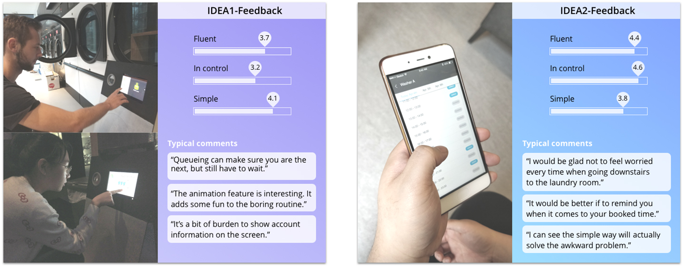

College Laundrymate
College Laundrymate is an individual design project carried out in the course Exploring Interactions for the Master Design for Interaction in Tu Delft. The course required students to design an experiential interaction scenario for specific people and situations on a personal, emotional level, or on an interpersonal, social level. In my case, I explored the context in the specific location of college communal laundry room to improve the current experience.
Duration
- Sep - Dec, 2017
Project@Exploring Interactions
Tools
- Sketch, Illusrastor, Photoshop,
- Invision, After Effects

Overall Process
Design Brief
The location of the context is communal laundry room in a student dormitory. Four washing machines and three driers are shared by more than 300 residents. All of the residents are foreign students studying in Delft. The design is to create a better experience of laundry routine and enhance understandings in the community.
Interview Session
Research Question
To start exploring my design goal, I posed two research questions to myself to answer.
1. How do college students look at sharing washing machines with neighbors/roommates?
2. How much do they hate/like doing laundry? How did they get their clothes washed before college?
Interview Question
To answer the research questions, I listed some interview questions to discuss with interviewees.
1. How often do you do your laundry?
2. Is doing laundry easy or troublesome for you?
3. Is there something bothering you/bringing convenience to share a washing machine with others?
4. Do you sort your laundry? In which way?
5. Have you ever sorted your laundry with your roommates/neighbour together? Why/Why not?
6. How did you get your clothes washed before college?
Interviewees
3 students doing laundry in a public laundry room
3 students sharing private machines with roommates
Conclusion
1. How do college students look at sharing washing machines with neighbors/roommates?
In shared apartments, students living in the same house are close to each other. Usually 2-10 people share a washing machine. They make some basic rules of using the machine(e.g. not use after 12 midnight; not wash shoes or bags). Sometimes they sort their laundry together when they have few pieces of clothes like jeans or white shirts to wash.
In student dormitories, a lot of students share one communal laundry room. They do the tedious routine alone. Laundry is always running around especially on weekends and workday evenings.Not being able to make agreements on laundry room etiquettes lead to some complaints and misunderstandings on each other.
2. How much do they hate/like doing laundry? How did they get their clothes washed before college?
Before college, most students have washing machines at home. Usually parents do and sort the whole family’s clothes together. Some students also helped their family to do laundry. In shared apartments, the situation don’t change a lot. In student dormitories, it becomes more time-consuming and limited. The current experience of sharing a communal laundry room is not pleasant.
Observation In Context
Look into Emotions
To further define some emotional moments I found in communal use, I did a small research session to know studens' opinions and feelings about this activitity and other residents.
I put participants(8 students from targeted group) into different communal laundry scenarios (different time left) when people need to wait for the last person. They made choices in different scenarios and reacted to it.
When they bring the laundry but find all the machines are in use. They feel annoyed and irritated.
They would only wait for free machines when time left is not long. (5-10mins). It’s boring and frustrating not being able to do anything meaningful.
When the wash is done but the owner hasn’t come. They feel hesitant and confused if they can move others’ clothes.
They feel embarrassed and a bit sorry when taking out others’ clothes after struggling.
Task Walkthrough
Step-by-step tour of one return

Students need to make 3 returns (wash,dry,fetch) to finish laundry. Sometimes they come in vain when it’s too long to wait a free machine.

Design Requirements

| Problem Statement | Design requirements | Priority |
| Unexpected wait: No free washers or dryers for limited number of machines | Enable students to view status of the machines in advance | P1 |
| Uncertain wait: Last person doesn’t take washed clothes in time | Remind students to have the awareness of following good laundry etiquettes | P1 |
| Meaningless time: Students don’t want to stay to wait but they cannot make sure they are the next if they come back later. They are not able to make use of that time. | Enable students to fully control their laundry schedule. Avoid any unncevssary wait. | P1 |
| Wasted mobility: Students come in vain when it’s too long to wait. | Create basic rules and waiting orders | P1 |
| Distraction: Pay attention to time when the washer/dryer is working | Enable students to receive reminders automatically, to take out clothes in time | P2 |
| Tedious procedures: Too many steps on different devices to pay and start | Enable students to pay and start easily and quickly | P2 |
Design Ideas
IDEA1 - Pay or Queue directly on a specific machine
Students scan payment QR codes to pay on a machine directly, or queue on the machine they want to wait for when all machines are in use. Animations on the screen show the status.
start
washing
washing; waiting
finished
IDEA2 - Book slot online
Students check the machine status online first before going to laundry room. They can book slot of an hour to arrange their laundry routine in advance.
Idea Evaluation
10 students from the target group experienced the prototypes of these two ideas. They were asked to rate the desired interaction qualities in design requirements. According to feedbacks, I took idea2 as the concept to next design stage.
